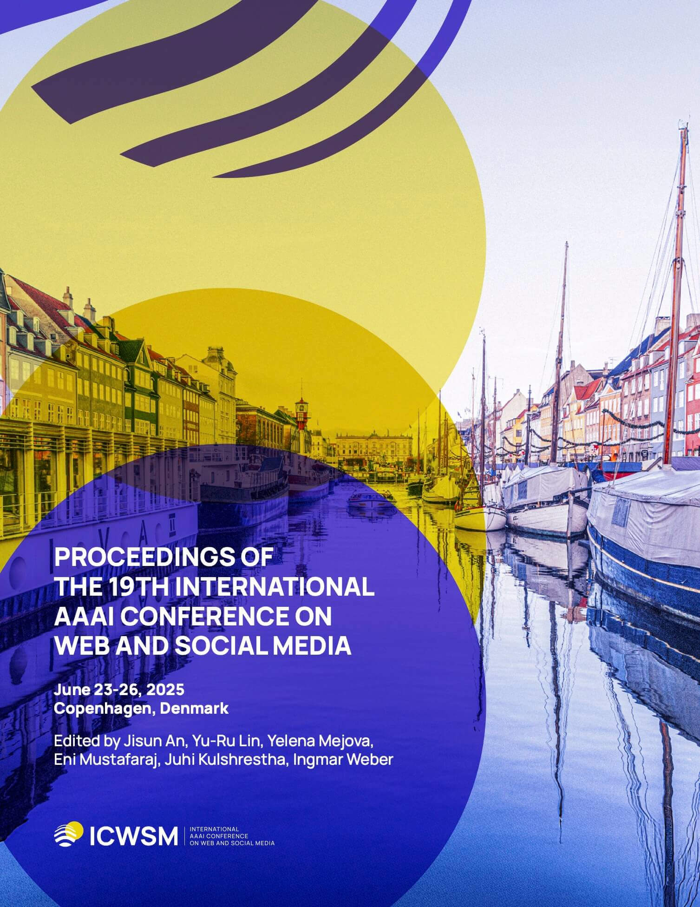

Publications

Characterizing Knowledge Manipulation in a Russian Wikipedia Fork
Trokhymovych, M., Kosovan, O., Forrester, N., Aragón, P., Saez-Trumper, D., & Baeza-Yates, R. (2025). Characterizing Knowledge Manipulation in a Russian Wikipedia Fork. Proceedings of the International AAAI Conference on Web and Social Media, 19(1), 1924-1936.
Full Text | DOI: 10.1609/icwsm.v19i1.35910
Hidden Persuasion: Detecting Manipulative Narratives on Social Media During the 2022 Russian Invasion of Ukraine
Kateryna Akhynko, Oleksandr Kosovan, and Mykola Trokhymovych. 2025. Hidden Persuasion: Detecting Manipulative Narratives on Social Media During the 2022 Russian Invasion of Ukraine. In Proceedings of the Fourth Ukrainian Natural Language Processing Workshop (UNLP 2025), pages 194–202, Vienna, Austria (online). Association for Computational Linguistics.
Full Text | DOI: 10.18653/v1/2025.unlp-1.19
Complex Comparison of Statistical and Econometrics Methods for Sales Forecasting
Kosovan, O., Datsko, M. (2024). Complex Comparison of Statistical and Econometrics Methods for Sales Forecasting. In: Silhavy, R., Silhavy, P. (eds) Data Analytics in System Engineering. CoMeSySo 2023. Lecture Notes in Networks and Systems, vol 935. Springer, Cham.
Full Text | DOI: 10.1007/978-3-031-54820-8_27
GeoDD: End-to-End Spatial Data De-duplication System
Trokhymovych, M., Kosovan, O. (2023). GeoDD: End-to-End Spatial Data De-duplication System. In: Silhavy, R., Silhavy, P., Prokopova, Z. (eds) Data Science and Algorithms in Systems. CoMeSySo 2022. Lecture Notes in Networks and Systems, vol 597. Springer, Cham.
Full Text | DOI: 10.1007/978-3-031-21438-7_60